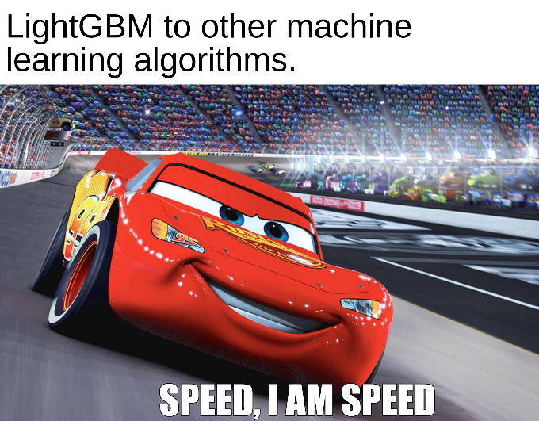

Gradient boosting decision tree(GBDT) is one of the top choices for kagglers and machine learning practitioners. Most of the best kernels and winning solutions on kaggle end up using one of the gradient boosting algorithm. It can be XGBoost, LightGBM or maybe some other optimized gradient boosting algorithm. So, in this blog, I will be talking about LightGBM and we will also get our hands dirty while implementing it on a dataset. Will try my best to keep this blog concise and complete.
Getting started
XGBoost and LightGBM are not the only implementations of GBDTs but they are insanely used because:
- they are easy to use
- have similar API as that of scikit-learn models
- have easy-to-use open source implementation and docs
Scikit-learn also has its own implementation of GBDT but it is slower and does not have certain important features that these new model possess.
Table of contents
- Background
- Introduction
- Why LightGBM?
- Difference in LightGBM and XGBoost
- Parameters
- Installation and Implementation
Background
Before learning LightGBM you should know what GBDT and before that, you should know what boosing is. Boosting is a sequential ensembling technique where hard to classify instances are given more weights which will help subsequent learners to put more emphases of learning these misclassified instances and final model is the weighted average of these weak learners.
Gradient Boosting Decision Tree(GBDT) is an ensemble of decision trees trained in a sequence where the errors from the previously trained tree are added to the new decision tree in the next iteration. This means every subsequent learner will try to learn the difference between the actual output and the predictions.
Decision trees split the data based on the features in order to predict some numerical value which can be used in case of both regression and classification. LightGBM uses an ensemble of decision trees because a single tree is prone to overfitting. The split depends upon the entropy and information-gain which basically defines the degree of chaos in the dataset. More is the information-gain better is the split. You can read how it works in this kernel.
Introduction
LightGBM grows tree leaf-wise i.e. it grows vertically as compared to other algorithms which grow horizontally(level-wise growth). Although leaf-wise growing is more prone to overfitting that's why it is advised to use LightGBM for large datasets. Also, while growing leaf-wise the loss can be reduced more effectively. The errors are minimized using the gradient-based method. Level-wise growth maintains a balanced tree, whereas the leaf-wise strategy splits the leaf that reduces the loss the most. Also, leaf-wise growth can end up in a balanced tree if required but vice-versa is not possible. If you have already worked with tree-based algorithms then you need to take care of the max_depth parameter here. A tree using leaf-wise will be deeper as compared to the other one but can have the same number of leaves.
Why LightGBM?

LightGBM is better because it supports GPU learning, uses lesser memory and faster processing with large datasets and that's all we want. Still, we cannot LightGBM everywhere because of no free lunch theorem. It is sensitive to smaller dataset so I suggest to use it only when you have around 10,000+ rows.
Similar to CatBoost, LightGBM can handle categorical features by taking the input of feature names but in a different way. LGBM uses a special algorithm to find the split value of categorical features(link).
Note: You should convert your categorical features to
categorytype before your construct Dataset. It does not accept string values even if you pass it through the categorical_feature parameter inside during training.
Difference in LightGBM and XGBoost
LightGBM uses a novel technique of Gradient-based One-Side Sampling (GOSS) to filter out the data instances for finding a split value while XGBoost uses pre-sorted algorithm & Histogram-based algorithm for computing the best split.
First, let us understand how pre-sorting splitting works:
- For each node, enumerate over all the features
- For each feature, sort the instances by the feature value
- Use a linear scan to decide the best split along that feature basis information gain
- Take the best split solution along with all the features
In simple terms, Histogram-based algorithm splits all the data points for a feature into discrete bins and uses these bins to find the split value of histogram. While it is efficient than the pre-sorted algorithm in training speed which enumerates all possible split points on the pre-sorted feature values, it is still behind GOSS in terms of speed.
So what makes this GOSS method efficient?
In AdaBoost, the sample weight serves as a good indicator to get the importance of samples. However, in Gradient Boosting Decision Tree (GBDT), there are no native sample weights, and thus the sampling methods proposed for AdaBoost cannot be directly applied. Here comes gradient-based sampling.
Gradient represents the slope of the tangent of the loss function, so logically if the gradient of data points are large in some sense, these points are important for finding the optimal split point as they have a higher error.
The basic assumption taken here is that samples with training instances with small gradients have smaller training error and it is already well-trained. In order to keep the same data distribution, when computing the information gain, GOSS introduces a constant multiplier for the data instances with small gradients. Thus, GOSS achieves a good balance between reducing the number of data instances and keeping the accuracy for learned decision trees.
Parameters
LightGBM comes with a lot of parameters and makes parameter tuning a little more complicated. Don't worry if you are just getting started with LightGBM then you don't need to learn them all. Start with the basic ones and you will learn more about others when you start using and practicing it more on different datasets. But most of the time these basic ones are enough to get a robust model.
These parameters are copied directly from the website.
Core Parameters
1. task (default: 'train'): It specifies the task you want to do (training or prediction).
2. objective (default: 'regression'): Specifies the application of your model. It can be regression, binary, multiclass etc.
3. boosting (default: 'gbdt'): Specifies the type of boosting algorithm. It can be gbdt, rf, dart or goss. You can read more about them here.
4. num_boost_round (default: 100): Number of boosting iterations.
5. learning_rate (default: 0.1): Determines the impact of each tree on the final outcome.
6. num_leaver (default: 31): Specifies the maximum number of trees in one tree.
7. device_type (default: 'cpu'): Specifies the type of device you want to use (cpu or gpu).
Control parameters
1. max_depth (default: -1): It describes the maximum depth of the tree you want. If you think your model is overfitting just reduce the max_depth.
2. min_data_in_leaf (default: 20): It describes minimum samples in a leaf. For eg., if it is 20 then it will not split. Increase its value when you feel your model is overfitting.
3. feature_fraction (default: 1.0): Its value is <= 1.0. For eg., if it is 0.7 then the model will select 70% of the total features randomly in each iteration for building trees. Also used to avoid overfitting and better generalization of data.
4. bagging_fraction (default: 1.0): Similar to feature_fration but used to rows i.e. it will randomly select part of data without resampling. Can reduce training time and overfitting.
5. early_stopping_round (default: 0): Model will stop training if one metric of one validation data doesn't improve in last 'early_stopping_round' rounds.
6. min_gain_to_split (default: 0.): It specifies the minimum gain required to split a leaf.
7. lambda_l1 (default: 0.0): Parameter for L1 regularization
8. lambda_l2 (default: 0.0): Parameter for L2 regularization.
9. max_cat_to_onehot(default: 4): When number of categories for a particular columns is <= 'max_cat_to_onehot', one-vs-other split algorithm will be used.
Metric Parameters
1. metric (default: ""): Specifies the metric to use as a loss function. In the default case, the model will choose the metric relevant to the objective. You can choose from auc, binary_logloss, softmax, mae, mse and many more.
2. is_provide_training_metric (default: False): Set this to true to output metric result over training dataset.
3. metric_freq (default: 1): Defines frequency for metric output.
You can learn more about parameters from the website but generally, these are enough.
Installation and Implementation
Installation is pretty simple just run pip install lightgbm in your terminal.
Refer to this kaggle kernel to get an overview of the LightGBM and how to implement it plus you can learn how to use bayesian optimization I used for parameter tuning. Also, you can fork and upvote it if you like.